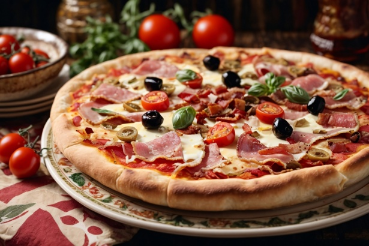

Home
Pizza

Description
We all love pizza. Let's make one.
In 15 minutes.
Ingredients
For the pizza dough
- 0.355l Water
- 2.25tsp Active dry yeast
- 0.5kg Bread flour
- 2tbsp extra virgin olive oil
- 2tsp kosher salt
- 1tsp sugar
For making the pizza and toppings
- Extra virgin olive oil
- Cornmeal
- Tomato sauce
- Firm mozzarella cheese, grated
- Fresh soft mozzarella cheese
- Fontina cheese, grated
- Parmesan cheese, grated
- Feta cheese, crumbled
- Mushrooms
- Bell peppers
- Italian pepperoncini
- Italian sausage, precooked
- Sliced black olives
- Chopped fresh basil
- Baby arugula
- Pesto
- Pepperoni
- Onions
- Ham
Steps
Making the pizza dough
- Place the warm water in a large bowl.
- Sprinkle the yeast over the warm water.
- Let it sit for 5 minutes.
- Stir.
- Add the flour, salt, sugar and olive oil.
- Mix on low speed for a minute.
- Knead the pizza dough on low to medium speed for 7 minutes.
- Spread a thin layer of olive oil over the inside of the bowl.
-
Place the pizza dough in the bowl and turn it around so it gets coated.
- Cover the dough with plastic wrap.
- Let it sit for 2 hours in a warm environment.
Preparing the pizzas
- Place a pizza stone on a rack in the lower third of the oven.
- Preheat the oven to 475F for an hour.
- Remove the plastic cover from the dough.
- Dust your hands with flour.
- Push the dough down. Divide the dough in half.
- Form 2 round balls of dough.
- Place each in its own bowl and cover them with plastic.
- Let them sit for 15 minutes.
- Prepare your desired toppings.
-
Take one ball of dough and flatten it with your hands on a lightly
floured surface.
-
Let the dough relax 5 minutes and continue to stretch it until it
reaches the desired diameter.
- Make dents along the surface of the dough with your fingertips.
- Brush the top of the dough with olive oil.
- Let it rest for 15 minutes.
- Repeat the process with the second ball of dough.
- Sprinkle your pizza peel with cornmeal.
- Transfer one prepared flattened dough to the peel.
- Spoon on the tomato sauce.
- Sprinkle the pizza with cheese.
- Place your desired toppings on the pizza.
- Sprinkle some cornmeal on the baking stone in the oven.
- Slide the pizza off the peel and onto the baking stone.
- Bake pizza in the 475F oven, one at a time for 15 minutes.
- Serve.